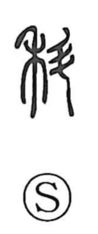

科

Kun: shina, toga, kasu | On: ka
category ・ department ・ course ・ grade ・ to impose a penalty ・ fault
Explanation
科 combines 禾, grain, with 斗, a vessel for measuring capacity. It shows grain being measured and assessed. The operation establishes both its quantity and its quality.
From assessing grain come grades, classes, and an appropriate allocation. A determined measure can serve as a standard or rule, so 科 also names a regulation or a division under which matters are arranged.
The same sorting gives separate branches or articles of a larger whole. In Japanese legal usage, toga names a fault or charge placed under such a rule. Measurement and classification remain the centre of the graph’s development.